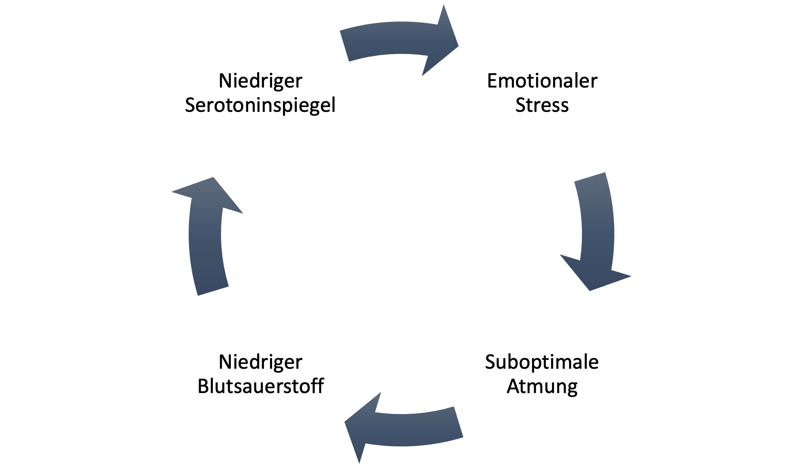

Leider bewegt sich bislang die Effektivität von Antidepressiva mehreren Studien zufolge etwa im gleichen Wirkungsbereich wie dem von Placebos.
Wesentlich stärkere positive Effekte haben Ergotherapeutisch-/Sportliche-Programme sowie Achtsamkeit-/Meditationstrainings vorzuweisen.
Was folgt, ist der Versuch über eine Möglichkeit der Depressionsbekämpfung zu informieren, die nicht nur effektiv, sondern gleichzeitig #cheaperthanabullet ist.
Depressionen stehen im Zusammenhang mit einem Teufelskreis:
Unsere Technologie nutzt das Mikrofon Ihres Smartphones, um Ihre Atemmuster zu analysieren - ohne spezielle Hardware, ohne teure Sensoren.
Die App erkennt, wann Sie flach atmen, und gibt Ihnen sanfte Hinweise, um zu tieferer, gesünderer Atmung zurückzukehren.
Wir suchen leidenschaftliche Entwickler, die an diesem Projekt mitwirken möchten.
Du bist nicht allein
0800 111 0 111
0800 111 0 222
Hilf uns, diese lebensrettende Technologie zu entwickeln.
GoFundMe"Giving mankind a fish vs teaching it to breathe"